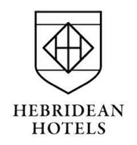

Trade Mark Journal No.2025/049 5 December 2025
UK00004289877 5 November 2025 (18,21,25,28,35,43)

- Class 18
- Luggage; bags; leather bags; handbags; leather handbags; holdalls; briefcases; rucksacks, backpacks; cases; travel bags; bags made from imitation leather; belt bags and hip bags; bags; shoulder bags; suitcases; tote bags; luggage tags; sports bags; gym bags; athletics bags; kit bags; umbrellas; parasols; walking sticks; key cases; key pouches; key wallets; card holders; credit card cases; coin holders; wallets; purses; collars, leashes and clothing for animals; parts and fittings for all of the aforesaid goods.
- Class 21
- Bottles; water bottles; mugs; bowls, plates, crockery and cups made of ceramics, glass, porcelain or earthenware; glassware, porcelain and earthenware; Household or kitchen utensils and containers; candle holders; glass jars; ice buckets; coasters; bottle openers; baskets; buckets; candlesticks; hip flasks; tankards; tumblers; crystal glassware; whisky glasses; whisky decanters; china, porcelain and glass ornaments; figures made of glass, ceramics, porcelain and earthenware; parts and fittings for all the aforesaid goods.
- Class 25
- Clothing; footwear; headgear; knitwear; sportswear; leisurewear; t-shirts; jumpers; polo shirts; jackets; coats; raincoats; waterproof clothing; waistcoats; pullovers; cardigans; trousers; jeans; leggings; sweat pants; blazers; socks; shirts; sweatshirts; coats; fleeces; hooded tops; vests; shorts; hats; caps; beanie hats; gloves; mittens; scarves; bandanas; neckerchiefs; belts (clothing); ties; wristbands (clothing); nightwear; gilets, body warmers; overalls; shoes; boots; parts and fittings for all the aforesaid goods.
- Class 28
- Toys, games and playthings; toy figures; toy figurines; decorations for Christmas trees; board games; card games; playing cards.
- Class 35
- Restaurant and bar management services.
- Class 43
- Hotels, motels, hostels and boarding houses; holiday and tourist accommodation; hotel, bar and restaurant services; provision of accommodation; hotel accommodation services; Services for providing food and drink; temporary accommodation; hotel services; booking services for hotels; reservation services for hotels; restaurant services; public house services; hospitality services; banqueting services; bar, café coffee shop and cafeteria services; cocktail lounge services; food cooking services; provision of services for events, namely provision of food, drink, provision of bar and catering services, provision of facilities for social events, provision of accommodation services, provision of reservation services of restaurant tables or reservation services of hotel rooms; provision of facilities for parties and private functions; room hire; provision of information, advice and consultancy in relation to all the aforementioned services.
Myrrha Satow
Clinton Satow
Representative: Marks & Clerk LLP